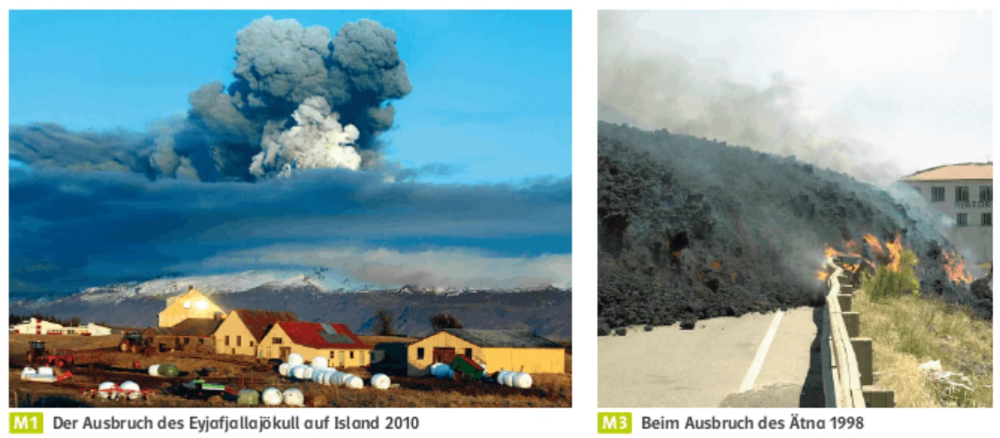
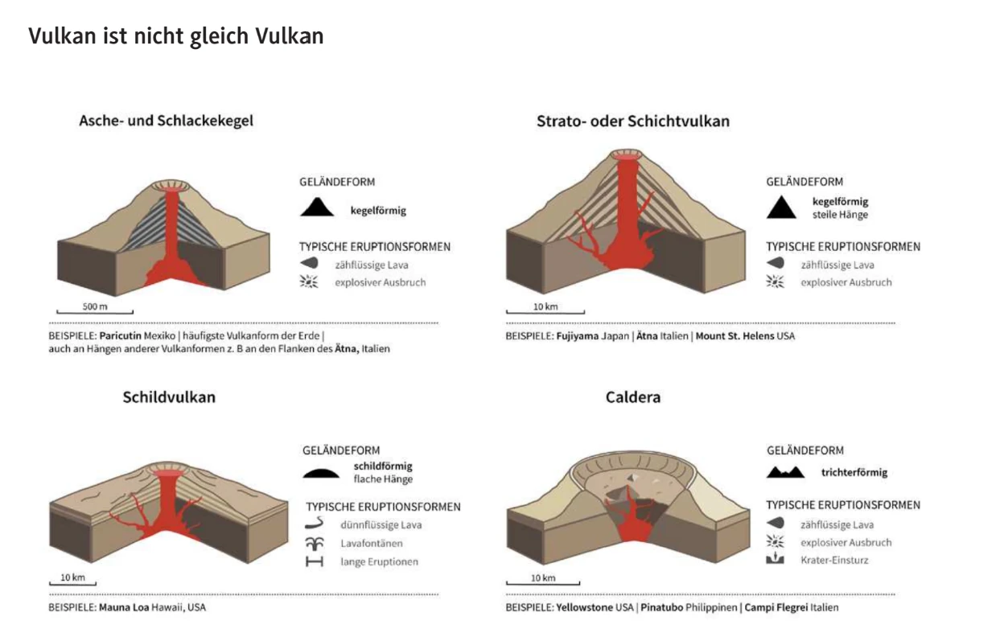
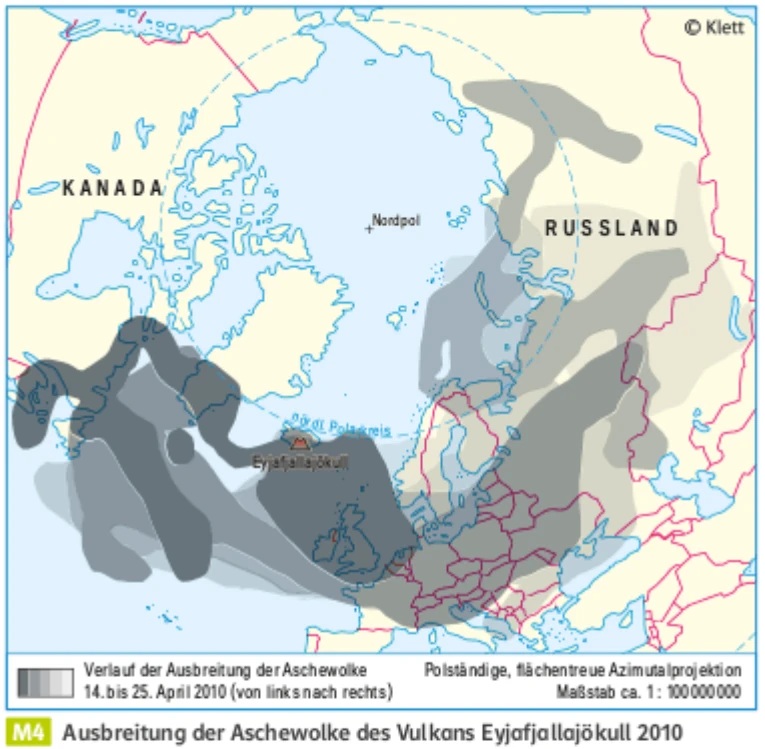
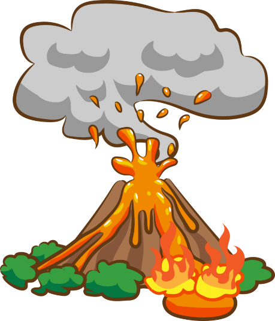
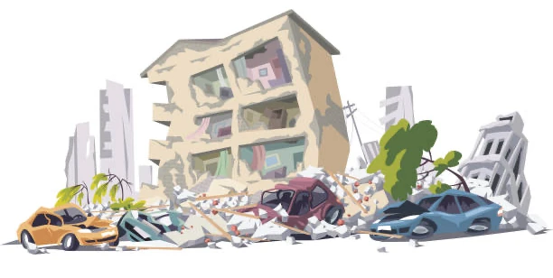

Einstieg · Do Now · Wiederholung
1Nenne die drei Arten, wie sich Erdplatten gegeneinander bewegen können.D
2„Die Erdplatten liegen fest und bewegen sich nie.“
Entscheide, ob die Aussage richtig oder falsch ist. Begründe deine Entscheidung.E
Einstieg · Impuls
Nachgestellte Abflugtafel

Einstieg · Fragenentwicklung
Erarbeitung · Schritt für Schritt
① Magmakammer: Magma sammelt sich unter dem Vulkan. Der Druck steigt.
② Schlot: Das Magma steigt durch den Schlot nach oben.
③ Ausbruch: Am Krater tritt das Magma aus. Jetzt heißt es Lava. Asche steigt als Aschewolke auf.
④ Neue Schicht: Lava und Asche kühlen ab. Sie bilden eine neue Schicht. So wächst der Schichtvulkan.
1Beschreibe danach deinem Partner oder deiner Partnerin den Weg des Magmas. Nutze die Fachbegriffe.E
Erarbeitung · KV5
Lies T1 und T2 im GL-Buch (S. 162–163). Du darfst dir den Text vorlesen lassen.
1Beschreibe die Vorgänge bei einem Vulkanausbruch in ganzen Sätzen. Nutze den Kasten mit Fachbegriffen.E–F
2Ordne den Zahlen und Buchstaben auf der Abbildung die richtigen Begriffe zu.D–E
3Vergleiche Schichtvulkane und Schildvulkane in der Tabelle (M5, M6).F
Sicherung · am Board
1Beschrifte den Vulkan. Verbessere danach Aufgabe 2 deiner KV5.D–E
Sicherung · Vergleich

1Vergleiche Schichtvulkan und Schildvulkan. Ordne die Merkmale zu.F
| Schichtvulkan | Schildvulkan | |
|---|---|---|
| Ausbruch | ||
| Lava | ||
| Form | ||
| Ausdehnung |
Transfer · Aschewolke

1Stelle deine Lösung zu Aufgabe 5 (GL-Buch S. 163) vor.E
Unsere Frage:
2Erkläre mit der Karte, warum am 16. April 2010 auch in Berlin kein Flugzeug starten durfte.F
Reflexion · Selbsteinschätzung
Tippe an, wie sicher du dich fühlst. Das ist nur für dich.
Kurzprojekt

VulkanLage (Kontinent, Land)
Tektonik der Region (Welche Platten bewegen sich wie?)
Aussehen (Höhe, Vulkanart, …)
Letzter Ausbruch und Schäden (Geschichte des Vulkans)
Aktueller Status (aktiv, inaktiv, ruhend, …)

ErdbebenLage (Kontinent, Land)
Tektonik der Region (Welche Plattenbewegungen verursachten das Beben?)
Stärke und Verlauf (gegebenenfalls Tsunamis in der Folge)
Schäden und Opferzahlen
Aktueller Status (Kämpft der Ort noch mit den Folgen?)
Kurzprojekt
Vulkane
Ätna
Eyjafjallajökull
Hekla
Stromboli
Vesuv
Mauna Loa
Llaima
Mount St. Helens
Anak Krakatau
Sakurajima
Erdbeben
Türkei und Syrien 2023
Indischer Ozean 2004
Tōhoku-Erdbeben 2011
Karfreitagsbeben 1964
Valdivia 1960
Kamtschatka 1952